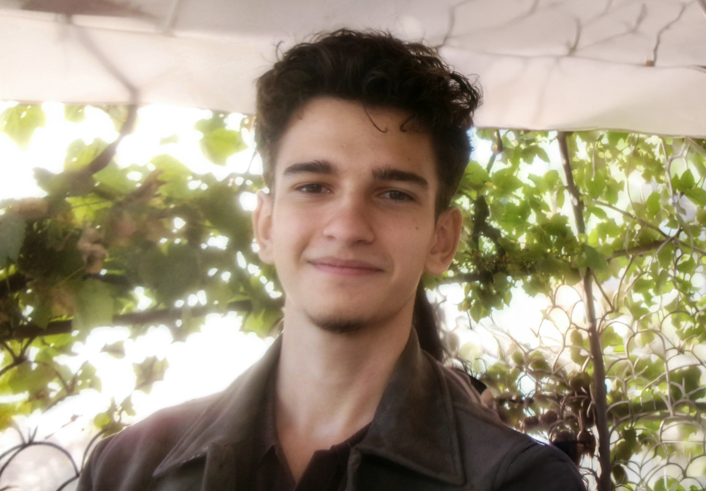

A life, seen through a lens
Alexandru Constantin Țîrdea
Photographer · Filmmaker
Alex is a passionate photographer who constantly looks forward to exploring the world and its mysteries. As a travel enthusiast, he loves documenting his own life through the art of photography, however, he is also considering pursuing cinematography in the years to come.
View my work